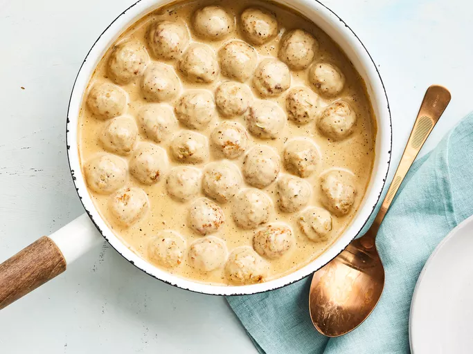

Classic Meatballs
Description:
Delicious homemade meatballs perfect for spaghetti or as a snack.
Prep Time: 20 minutes | Cook Time: 30 minutes | Servings: 6
Ingredients:
- 1 lb ground beef
- 1/2 cup breadcrumbs
- 1/4 cup grated Parmesan cheese
- 1/4 cup chopped parsley
- 1 egg
- 2 cloves garlic, minced
- 1/2 teaspoon salt
- 1/4 teaspoon black pepper
- 2 cups marinara sauce
Instructions:
- Preheat oven to 400 degrees F (200 degrees C).
- In a large bowl, combine ground beef, breadcrumbs, Parmesan cheese, parsley, egg, garlic, salt, and pepper. Mix until well combined.
- Shape the mixture into 1-inch meatballs and place them on a baking sheet.
- Bake in the preheated oven for 15-20 minutes, or until browned and cooked through.
- In a large skillet, heat marinara sauce over medium heat. Add the cooked meatballs and simmer for 10 minutes.
- Serve hot with spaghetti or as a meatball sub.